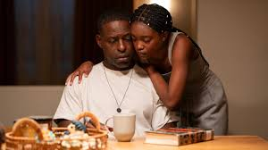

Overview
Hulu’s latest gripping political thriller, Paradise, debuted on January 26, 2025, captivating audiences with its intense storytelling, complex characters, and intricate conspiracies. Created by Dan Fogelman, the mastermind behind This Is Us, the show brings together a star-studded cast, including Sterling K. Brown, James Marsden, and Julianne Nicholson. Beyond traditional reviews, Paradise has sparked online discussions about the real-life implications of government secrecy and surveillance. Many fans appreciate its ability to blend entertainment with thought-provoking themes, making it more than just a standard thriller. Critics have praised the show’s sharp writing and unpredictable twists, keeping viewers on the edge of their seats. With its mix of political intrigue and emotional depth, *Paradise* has quickly become one of the most talked-about series of the year.
Cinematic Techniques and Storytelling
One of the most remarkable aspects of Paradise is its use of cinematic techniques to heighten suspense and engagement. The series employs a mix of handheld camera work and steady tracking shots to create an immersive, almost documentary-like feel. The cinematography makes use of dark, moody lighting to reinforce themes of secrecy and paranoia, while high-contrast colors emphasize the power struggles between different factions. The soundtrack, composed by renowned musician Hans Zimmer, adds to the tension with haunting orchestral pieces and electronic undertones. Flashbacks and nonlinear storytelling are also used effectively to reveal crucial backstory elements at just the right moments, keeping the audience guessing while maintaining a gripping pace. These visual and auditory choices work together seamlessly, ensuring that every scene feels both intimate and high-stakes, drawing viewers deeper into the show’s intricate web of deception and intrigue.
Key Highlights
- Intriguing Political Thriller: A gripping mix of conspiracy, espionage, and government corruption.
- Stellar Cast: Features acclaimed actors such as Sterling K. Brown, James Marsden, and Julianne Nicholson.
- Complex Characters: Characters navigate moral dilemmas, blurred loyalties, and personal redemption.
- Nonlinear Storytelling: Uses flashbacks and suspenseful pacing to keep audiences engaged.